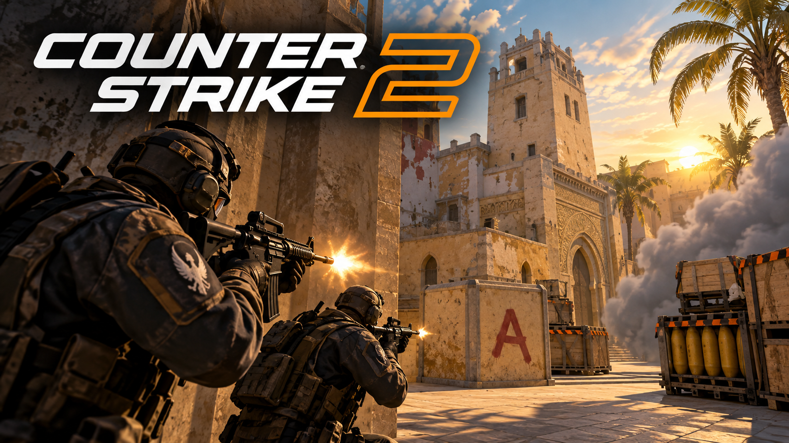

Informatyka to mój ukochany przedmiot. Uwielbiam programować w Pythonie, robić wykresy i tabelki w Excelu, lubię także edytować tekst w Wordzie za pomocą różnych funkcji. Fascynuje mnie programowanie i tworzenie różnych gier w Robloxie, ale także robienie stron internetowych.
W przyszłości chciałbym zostać testerem gier na PlayStation, Xbox oraz na komputerze. Interesuje mnie testowanie gier typu CS2 i GTA 5. Chcę także pracować jako informatyk oraz programować duże programy dla firm. Chcę studiować informatykę na Politechnice.
W przyszłości chciałbym nauczyć się lepiej programować w Pythonie i C++. Chcę także dowiedzieć się, jak stworzyć kryptowalutę.